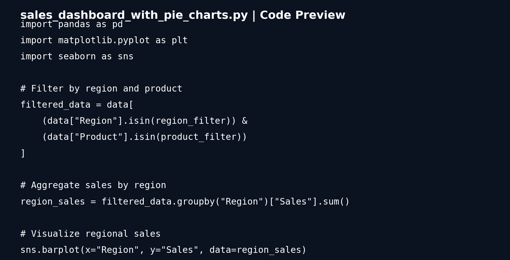

01 · Sales Performance Dashboard

Built with Python, pandas, Matplotlib and Seaborn. The repository contains a sales dataset and code for region/product filtering plus bar and pie visualizations.
PythonPandasMatplotlibSeaborn
$9,600 sales in repository dataset
North $2,700 • South $2,900 • East $2,300 • West $1,700
GitHub →
The chart above is generated from the repository's actual dataset. It is a portfolio preview, not a screenshot of the original script's runtime.
02 · HR Dashboard | Advanced Excel

Interactive Excel dashboard with department/gender breakdowns, salary metrics, performance rating and slicers. The GitHub repository contains the XLSX workbook and the screenshot shown above.
ExcelPivot TablesDashboardHR Analytics
Actual project screenshot
GitHub →
03 · LinkedIn Data Scraper

Python-based workflow documented in the repository using SerpAPI and Selenium. It extracts name, title, company, location and profile link from executive profiles.
PythonSerpAPISeleniumData Extraction

GitHub →
Workflow visual is based on the repository documentation; it is not a captured runtime screenshot.
04 · Customer Churn Prediction
Python-based customer churn analysis and prediction project from the CV project list. This section is intentionally kept without fabricated metrics until a source repository or output is available.
PythonMachine LearningData Analysis
Next upgrade: add actual notebook/output proof.
05 · Generative AI for Analytics
Analytics productivity workflow using Generative AI for report drafting, analysis support and summarization.
GenAIAnalyticsReporting
Next upgrade: add a concrete demo or repository link.